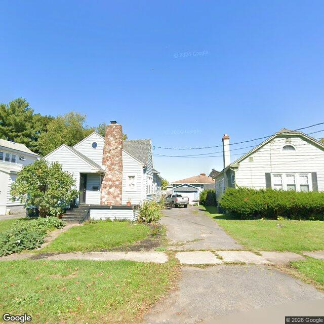

Property entry
304 Willumae Dr
Published 2026-10-24T16:52:13+00:00
Parcel key: 003-18-320

City records
Matches use parcel IDs or normalized property addresses. Nearby properties are not treated as matches. Records may include historical or closed cases; check each record's status and dates. Publication dates are not source-data dates.
Vacant properties 0
No matches stored for this feed. The feed or address matching may be incomplete; this is not confirmation that no records exist.
Records refreshed 2026-10-27.
Rental registry 0
No matches stored for this feed. The feed or address matching may be incomplete; this is not confirmation that no records exist.
Records refreshed 2026-10-27.
Code violations 3
- Latitude
- 43.07787066
- Longitude
- -76.15365105
- Neighborhood
- Court-Woodlawn
- ObjectId
- 153005
- SBL
- 003.-18-32.0
- complaint_address
- 304 Willumae Dr
- Latitude
- 43.07787066
- Longitude
- -76.15365105
- Neighborhood
- Court-Woodlawn
- ObjectId
- 153007
- SBL
- 003.-18-32.0
- complaint_address
- 304 Willumae Dr
- Latitude
- 43.07787066
- Longitude
- -76.15365105
- Neighborhood
- Court-Woodlawn
- ObjectId
- 153009
- SBL
- 003.-18-32.0
- complaint_address
- 304 Willumae Dr
Records refreshed 2026-10-27.
Unfit properties 0
No matches stored for this feed. The feed or address matching may be incomplete; this is not confirmation that no records exist.
Records refreshed 2026-10-27.
AI image observations (unverified)
These observations are generated from an image, not an inspection or an official code finding. No human verification is recorded here.
Image capture date: Not recorded. The entry publication date does not establish the age of the image.
Automated image description
{ "summary": "The visible exterior of the property appears to be a single-family residence with white siding and a stone chimney, situated on a lot with a grass lawn and a concrete driveway.", "property_type_guess": "single_family", "visible_conditions": [ "Single-story residence with an attic gable and a prominent stone-clad chimney on the front facade.", "The main structure features white horizontal siding.", "The roof appears to be covered with asphalt shingles.", "The front entry includes dark steps and a railing.", "Landscaping consists of shrubs and a grass lawn, with some areas of sparse grass or bare soil.", "A concrete driveway runs along the right side of the property, showing signs of cracking and deterioration." 侬], "condition_scores": { "roof": "good", "siding_or_facade": "good", "windows_doors": "good", "porch_or_entry": "fair", "yard_or_lot": "fair", "trash_debris": "none_visible", "vegetation_overgrowth": "none_visible" }, "visible_flags": { "boarded_windows_or_doors": "no", "fire_damage_visible": "no", "structural_damage_visible": "no", "vacancy_signs_visible": "no", "active_construction_visible": "no" }, "possible_unrecorded_issues": [ "Deterioration and cracking observed in the concrete driveway.", "Some bare patches are visible in the front lawn.", "Minor wear on the front entry steps." ], "image_annotations": [ { "label": "Driveway deterioration", "reason": "The concrete driveway shows multiple cracks and signs of breaking apart in sections.", "bbox": { "x": 0.35, "y": 0.55, "width": 0.4, "height": 0.3 }, "confidence": "high" }, { "label": "Lawn bare patches", "reason": "Several areas of the front lawn show sparse grass or bare soil.", "bbox": { "x": 0.05, "y": 0.65, "width": 0.2, "height": 0.15 }, "confidence": "high" } ], "needs_human_review": "false", "confidence": "high", "caveats": [ "The image provides a street-level view, limiting visibility of the rear or sides of the property.", "The condition of the roof is assessed from a ground-level perspective." ] }
Property type guess: unclear
Visible conditions
- No items reported.
Condition scores
No structured condition scores available.
Visible flags
No structured visible flags available.
Possible image-only flags
- No items reported.
AI review boxes
- No items reported.
Review reasons
- No items reported.
Image quality
- Available
- True
- Bytes
- 76591
- Needs Rerun
- False
ACS tract context
Census Tract 2; Onondaga County; New York
- Housing units
- 1686
- Median gross rent
- 146700
- Median household income
- 51848
- Poverty rate
- 28.1
- Renter-occupied share
- 50.1
- Total population
- 3511
- Vacancy rate
- 14.7
OpenStreetMap nearby
Nearby map data is temporarily unavailable. This does not mean there are no mapped features.